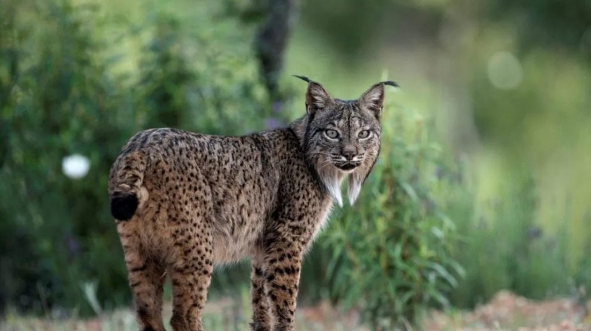
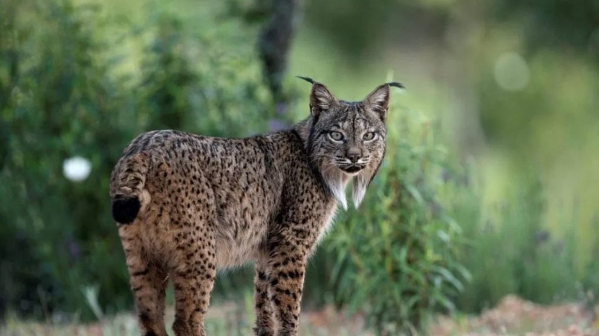

En las ultimas decadas, la perdida de biodiversidad y los animales en peligro de extincion, son una problematica para la sociedad.Se considera en peligro de extinción a una especie animal cualquiera, cuando su existencia y reproducción no se puede desarrollar en ninguna parte del mundo. Una especie en peligro de extincion es una especie biologica que esta en peligro de desaparecer (extinguirse), ya sea global o regionalmente. Esto puede deberse a la perdida de habitat, contrabando de ejemplares silvestres o accion de especies invasoras.
 
